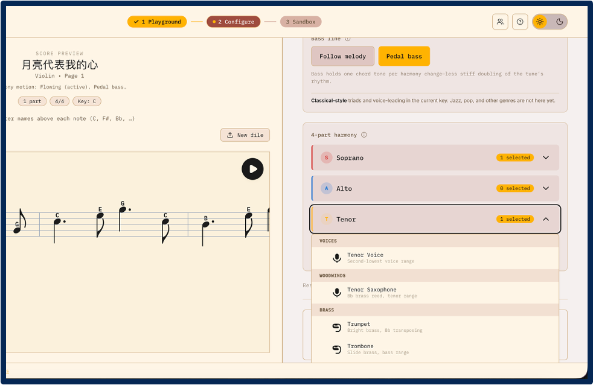
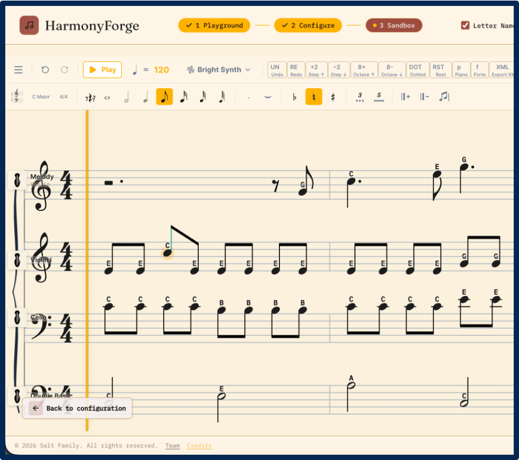
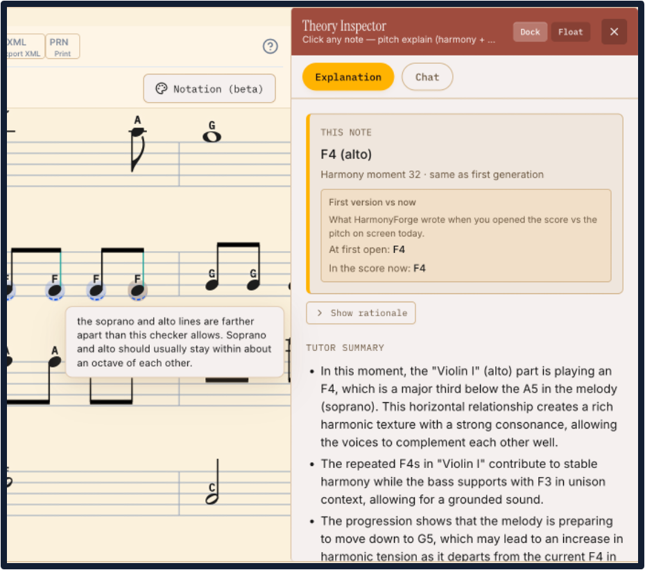

A deterministic co-creative system for symbolic music arrangement
Dulf Vincent Genis · Shivam Patel · Muawiz Khan · Yiren Liu · Jeff Ginger · Yun Huang
Salt Lab, School of Information Sciences, University of Illinois Urbana-Champaign
{dgeni2, sjp10, mfkhan4, yirenl2, ginger, yunhuang}@illinois.edu
ISMIR 2026Late-Breaking Demo
Demo
Source
WhyThe parts do not match the room.DraftA solver writes SATB by the rules.EditYou move the notes by hand.AskA tutor explains. You confirm.
Story spine · Hard rules draft → your hands edit → theory explains on demand → you stay the author.
01 — The stall
The room is ready. The parts are not.
Ensembles stall when the score lacks a line for who showed up. Generative models draft fast — then leave voice-leading and range errors for musicians to fix.
HarmonyForge’s answer: draft under hard rules, edit by hand, explain on demand.
N = 21Formative interviews with musicians
♯
Clef laborHours of hand transposition before anyone can play.
–
Sitting outA player waits — no written line fits their instrument.
02 — Logic Core
A search, not a sample.
Infers chords from your melody and writes SATB under Aldwell & Schachter hard barriers — then maps the scaffold onto whoever showed up (even flute + trombone + violin).
1
Deterministic solverGreedy-then-backtracking. No sampled tokens.
2
Common-practice SATBFour voices in range, from the melody you upload.
03 — Tactile Sandbox
Your hands on the staff.
After generation the score is yours. Edit on a patched RiffScore canvas — note-level collaging, not another prompt. Export PDF, MusicXML, WAV, or MIDI when you are done.
A
Direct manipulationClick a note. Drag the pitch. Hear it now.
B
Keep or rewriteRegenerate a measure — or place every pitch.
04 — Theory Inspector
Closed until you ask.
Click a note for deterministic interval and rule checks. Chat is retrieval-augmented from Open Music Theory. Suggests repairs — never writes without your confirm.
1
Facts firstThe checker is code. The tutor waits until you open it.
2
Grounded, not inventedExplanations from a curated theory lexicon.

Fig. 1 · Logic Core — SATB scaffold remapped to your ensemble.

Fig. 2 · Sandbox — melody plus parts. You move the pitch.

Fig. 3 · Inspector — facts + a suggested repair. You decide.
Proof — Hard barriers
What the search cannot cross
RangeEach SATB voice stays in compass.
SpacingS–A, A–T ≤ 8ve; T–B ≤ 12th.
CrossingNo crossing: S ≥ A ≥ T ≥ B.
ParallelsNo parallel fifths or octaves.
Motion heuristicPrefer small pitch steps (Fux-inspired) — a preference, not a wall.